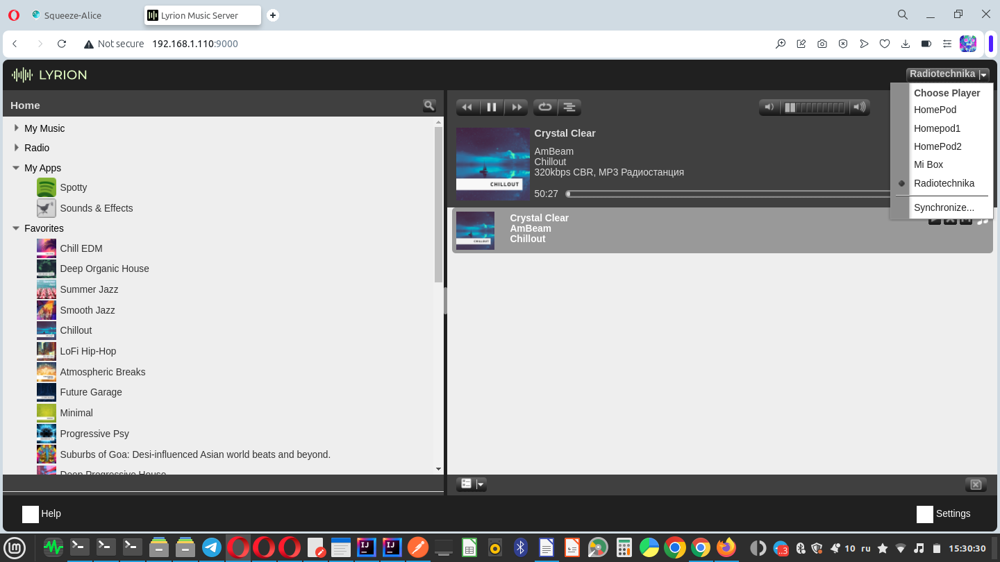
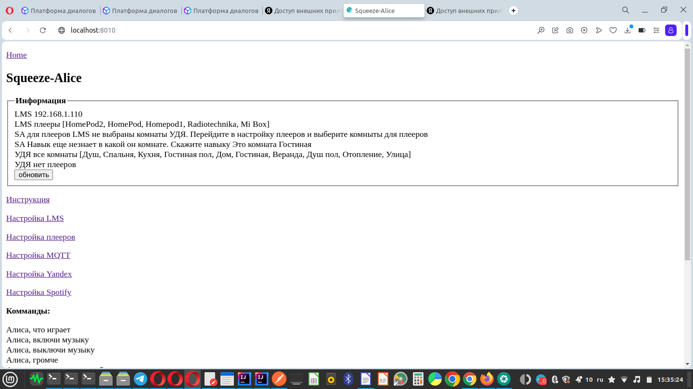
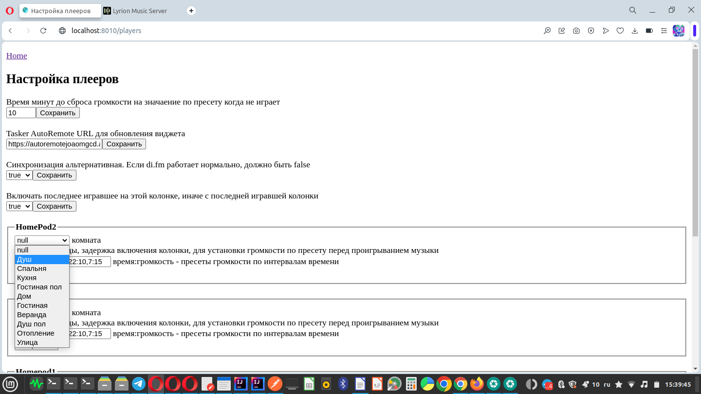
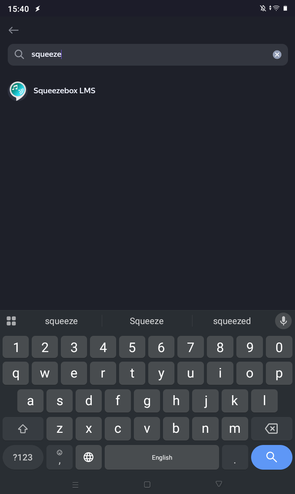
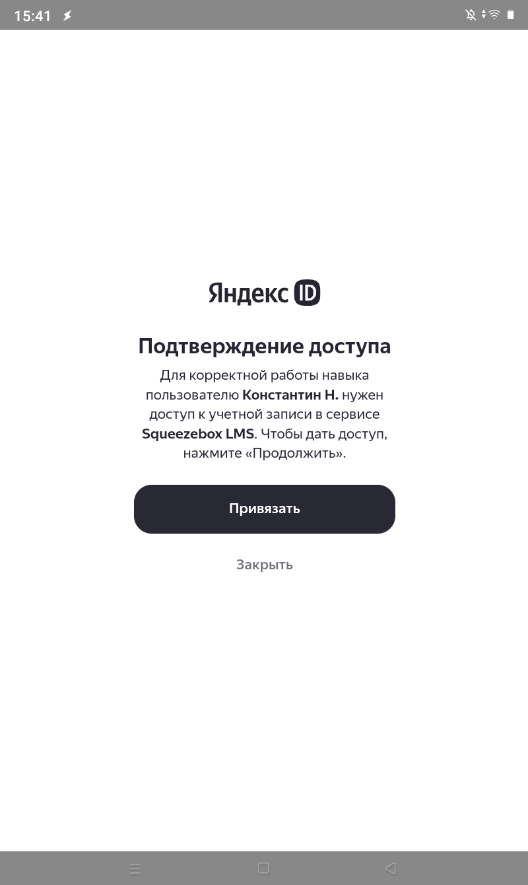
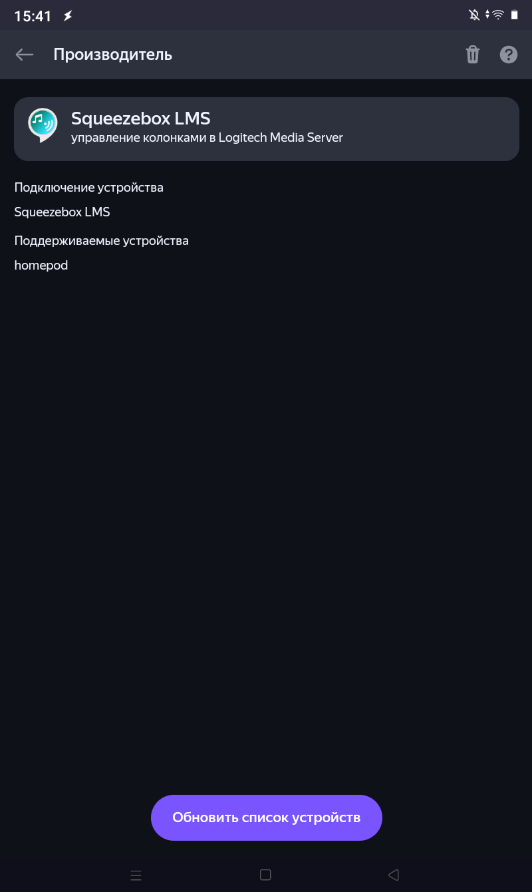
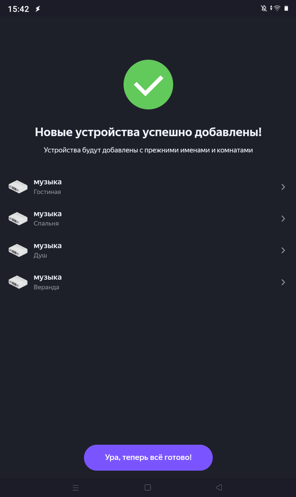
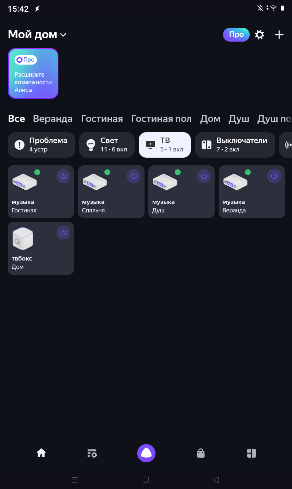
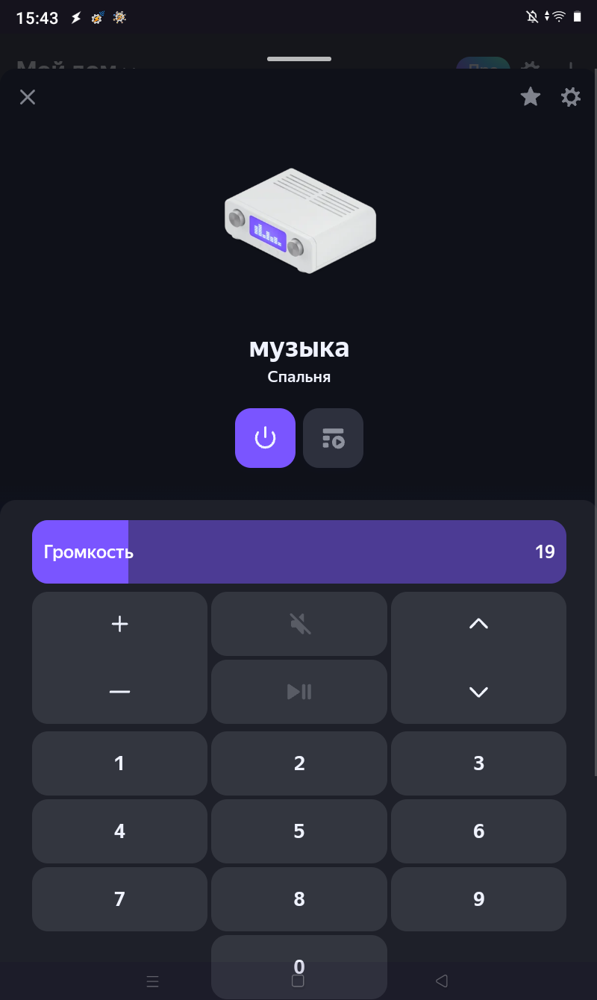
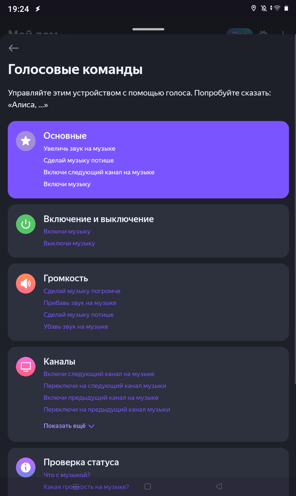

Это навык Алисы для управления плеерами LyrionMediaServer
Установка:
Должен быть запущен LMS, например http://192.168.1.123:9000
Скачать и распаковать на ноутбук архив https://github.com/knovash/squeeze-alice/blob/main/squeeze-alice-local.tar.gz
Cкрипт install_ssh_192.168.1.123.sh скопирует файлы на ip и запустит сервис навыка, поменяйте в названии файла на свой ip.
Запустить скрипт install_ssh_192.168.1.123.sh
Открыть http://192.168.1.123:8010/
Авторизация в Яндекс
Авторизация в Спотифай (если нужен голосовой поиск в Спотифай)
Настройка плееров - выбрать комнаты
Открыть приложение УДЯ
УДЯ Найти производителя Squeezebox
УДЯ Привязать к Яндекс
УДЯ Обновить список устройств
УДЯ показаны устройства "музыка" в комнатах
УДЯ Ура, теперь всё готово!
Удаление:
Скрипт uninstall_ssh_192.168.1.123.sh
удалит файлы
rm -r /opt/squeeze-alice-1.0
rm /lib/systemd/system/squeeze-alice.service
остановит сервис
systemctl disable squeeze-alice.service
systemctl daemon-reload
В
приложении УДЯ удалите производителя
и устройства
1.
Запустить Lyrion Music Server
https://lyrion.org, открыть http://localhost:9000

2. Запустить Squeeze-Alice

3. Авторизоваться в Яндексе
3. Перейти в Настройку плееров и выбрать для плееров LMS комнаты УДЯ

4. Открыть приложение УДЯ
Добавить устройство, найти производителя Squeezebox LMS

Привязать к Яндексу
Подтверждение доступа, нажать Привязать
Обновить список устройств
 
 
Новые устройства успешно добавлены!
Ура теперь все готово!
 